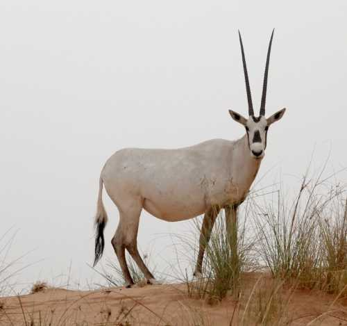
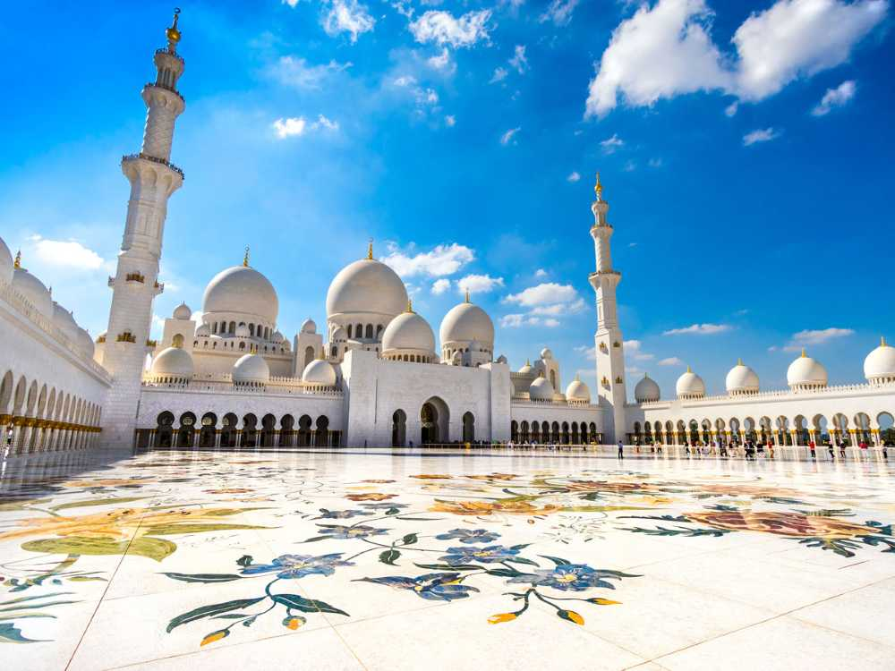

Offered Pakages
Saadiyat Cultural District
home to UAE's major museums. A tour tailored to the rich history of the UAE.

Al Qana
dine in, watch the sea and interact with a variety of experiences to explore.

Uncover the timeless beauty, rich heritage, and modern wonders of the region with bespoke journeys tailored just for you.
Welcome to White Oryx Middle East Tours, your premier gateway to the enchanting landscapes and vibrant cultures of the region. Named after the legendary Arabian Oryx—a symbol of resilience, grace, and heritage—we invite you to step off the beaten path and into a world of unforgettable discovery. Whether you seek the quiet majesty of shifting desert dunes, the awe-inspiring architecture of futuristic cities, or the ancient whispers of historic trading ports, we craft seamless travel experiences that stay with you forever.
Saadiyat Cultural District
home to UAE's major museums. A tour tailored to the rich history of the UAE.

Al Qana
dine in, watch the sea and interact with a variety of experiences to explore.